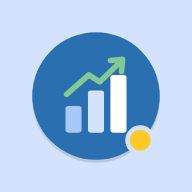

Små appar,
stora behov
Fyra appar för mobilen, byggda från samma mall. Bläddra för att se dem – och vad mallen betyder för dig.
Sist i presentationen kan du öppna apparna direkt i mobilens webbläsare, utan installation, eller läsa vidare i varje apps egen presentation.
Vanliga appar vill för mycket
Konto, reklam, avgifter och din data på deras server. Mina appar löser just det.
Samma grund i alla: gratis, utan konto och reklam, och din data lämnar aldrig telefonen.
Fyra appar – samma känsla


Idag · Vecka · Trend


Månad · Översikt · Statistik


Matcher · Tabell · Lag


Trådar · Överblick · Arkiv
Bläddra mellan apparna med ‹ › längst ner. Påhittad exempeldata.
Inget lämnar telefonen
| Vanliga appar | Mina appar | |
|---|---|---|
| Din data | På företagets server – kan läcka eller säljas | Bara i telefonen |
| Konto | Krävs, med e-post och lösenord | Inget |
| Backup | I företagets moln | Låst fil med ditt lösenord – samma kryptering som banker använder |
| Reklam och spårning | Ofta | Aldrig |
Enda undantaget: fotbollsappen hämtar resultat från en enda källa – aldrig med din data. Spara lösenordet till backupen i din lösenordshanterare – det finns aldrig i filen, och utan det öppnas den inte.
Öppna – och spara på hemskärmen
- Android: tryck på ⋮ och välj Installera app.
- iPhone: i Safari, tryck på Dela och välj Lägg till på hemskärmen.
Då startar appen som en vanlig app, även utan nät. Öppnade du länken i Messenger? Välj först Öppna i webbläsare.